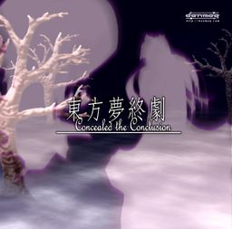

- Welcome to Touhou Wiki!
- Please register to edit. For assistance, check in with our Discord server or IRC channel.
Concealed the Conclusion
Concealed the Conclusion | |
|---|---|
|
 | |
| Developer |
danmaq (Mc, END, HAL900, 日本犬雑種, しぐれM, えむ /nyagakiya, みょん) |
| Publisher | |
| Released |
December 31, 2006 (Danmakufu) (Comiket 71) |
| Genre |
Vertical Danmaku Shooting Game |
| Gameplay |
Single-player story mode |
| Platforms |
Windows 98?/ME?/2000/XP (Danmakufu) |
| Requirements |
Direct3D, DirectX 8.1, Except the video cards which max texture size is only 256x256 (e.g. Voodoo) (Danmakufu) |
Touhou Mutsuigeki ~ Concealed the Conclusion (東方夢終劇 ～ Concealed the Conclusion, lit. "Eastern Dream End Drama") is a Touhou Project fangame by danmaq, originally a script set for Touhou Danmakufu and later rewritten using Microsoft XNA. It is the second game in Danmaq's alternative Touhou series, and has massive improvements over the first game – The Alternative Age.
It's a regular day in Gensokyo, until Marisa Kirisame goes over to find that Reimu Hakurei is missing, and the shrine is even locked up. Playing with four different attack styles, the yin-yang ball, and 4 different starting scenarios, the player travels through 6 stages and 2 extra stages to solve the mystery of this tragic story.
The game is an overall reference as to what could happen if something happened to the current Shrine Maiden in official terms, seeing that the Miko of Hakurei is crucial to Gensokyo's survival or, rather, it is based on a theory.
Gameplay[edit]
Story[edit]
In Gensokyo, a rather weak spring is blooming. The flowers are weak, the youkai are rather calm, and Gensokyo seems to be in a slump. Marisa Kirisame, a scheming magician, is brewing up some new magic. However, unlike her normal magic, this isn't for fighting, it's for viewing flowers. She goes over to Reimu Hakurei, to show her. However, when she shows up at the shrine, nobody is there, and it's locked up, appearing to have been vacant for a period of time. A tragic story of Gensokyo has quickly begun. There are four separate scenarios to choose from, changing the first 3 stages.
In Scenario A, Marisa heads over to the Scarlet Devil Mansion. Flandre Scarlet has broken out, and Hong Meiling is out to catch her. Inside the mansion, she disrupts Sakuya Izayoi's cleaning, and Remilia Scarlet is quite surprised to see her visit the main section of the mansion first. Finally, when she reaches the library, after being slowed by Koakuma, she is told by Patchouli Knowledge that Reimu had died and had been dead for some time, and she's quite a special girl, so reviving her won't be too easy. After this tip, she heads over to Hakugyokurou.
In Scenario B, Marisa heads over to Eientei. Fujiwara no Mokou and Kaguya Houraisan disrupt her with their constant fighting, slowing her advance to the mansion. Inside, both Reisen Udongein Inaba and Eirin Yagokoro fight against her advance. Finally, she reaches Tewi Inaba, who surprisingly enough, tells her that she, too, just like Reimu, is dead, and tells her the correct direction to go in.
In Scenario C, Marisa heads over to Muenzuka. First she's stopped by Lily White and Medicine Melancholy, who just want to fight. After this, Aya Shameimaru stops her, and makes Marisa mad, so they fight. Finally, she meets Komachi Onozuka and Eiki Shiki, who directs her, but also tries to correct her attitude. Marisa then leaves to do her final good deed.
In Scenario D, as Marisa heads off, she encounters Mima who wants to play with her. Refusing to be her servant again, Marisa barely wins against her and flies off. She visits Yuuka Kazami's mansion Mugenkan where, after a brief talk on how Marisa's speech patterns have changed over the years, they have a duel. Marisa's search takes her even to Makai, where Shinki spars with her briefly before Alice comes out. Alice says that the link between Makai and Gensokyo is closing today and invites Marisa to stay here with her. Marisa instead asks why can't Alice stay in Gensokyo with her. The two have a quasi-lover's quarrel before engaging in a fierce fight. After being defeated, Alice says she fought so hard to burn herself into Marisa's memory as the two part, and finally reveals Reimu's location.
Marisa quickly heads over to the Netherworld, and while climbing the endless staircase to Hakugyokurou, she is stopped by Chen, Ran Yakumo, and Yukari Yakumo. Yukari knows exactly what is going on, and is trying desperately to stop Marisa from finding Reimu. Marisa asks her to revive Reimu, but she says it would be meaningless, and after Marisa wins, quickly leaves through her gap. In the tower, she meets Youmu Konpaku and Yuyuko Saigyouji, who tells her that Gensokyo is nothing but Reimu's dream, and she is finally ending it. Marisa thinks this is lies, but eventually accepts it. Yuyuko tells her there is nothing she can do, though Reimu is still here, until sunset. Marisa demands to go, but Yuyuko rather would fight with her. After Marisa wins, Yuyuko leads her to Reimu, but still fights her one more time, with Yukari.
Finally she meets Reimu, who is wearing a white outfit rather than her typical red-white Shrine Maiden outfit. Marisa quickly requests some time with her, but Reimu denies it, as all in Gensokyo are even today. Reimu confirms that Gensokyo is ending, and Marisa requests her have one last danmaku battle, a request she honors. However, this will lead to there being almost no time left for Gensokyo, though Marisa has been gathering Reimu's essence. In one final battle for the fate of Gensokyo, Marisa and Reimu have a difficult struggle to win.
A while later, Marisa finds that Gensokyo has returned. As she flies through this Gensokyo, shocked by well-behaved fairies, she finds Suika Ibuki around. Eventually, they meet again, and Suika explains that part of her managed to survive, and by using her powers to gather, she successfully managed to recreate a Gensokyo, and demonstrates this by creating a fairy. However, she cannot recreate their old friends. Marisa and Suika quickly decide to have the first fight of the new Gensokyo, and in the end, when Marisa wins, Suika tells her that she is still, along with this Gensokyo, unstable, and she should return later.
Marisa returns after a while to Gensokyo with a "specialist" that Suika asked her to bring. When Suika finds them she demands to have a battle with her, but Marisa refuses and wants to fight the "specialist" first. The two have a short battle and Suika is defeated once more. The "specialist" is later revealed to be Reimu Hakurei (dressed in her normal outfit), who is shocked to find out that Gensokyo has become real. She regrets giving up on Gensokyo before, and wishes to return to the normal life there. However, Marisa demands another battle. Reimu agrees again after warning her she forgot how to hold back. After a long battle, Reimu is defeated and realizes that she's now equal to the other residents of Gensokyo. Marisa and Reimu resume their 'regular' lives in Gensokyo afterwards.
Music[edit]
There are a total of 38 tracks within this game, with the title screen theme composed by Mc and the rest by myon (みょん). All the themes are arrangements of songs sourced from across the Touhou Project, from the early PC-98 era of Highly Responsive to Prayers to Phantasmagoria of Flower View. The game also contains two themes arranged from the Seihou Project, mostly from Shuusou Gyoku.